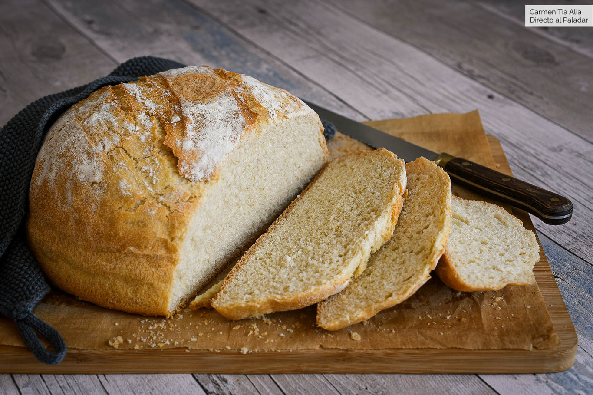

Pan

Descripción
Rico pan casero fácil de preparar
Ingredientes
- Agua
- Harina
- levadura
- sal
- aceite
- azucar
Preparación
- Combinar en un bowl la harina y sal
- En otro bowl, combinar la levadura, agua, azúcar y aceite. Revolver hasta que se integre todo
- Combinar el contenido de ambos bowls, revolver hasta que quede hecha la masa
- Dejar reposar por media hora
- etc etc
<--- Volver al inicio